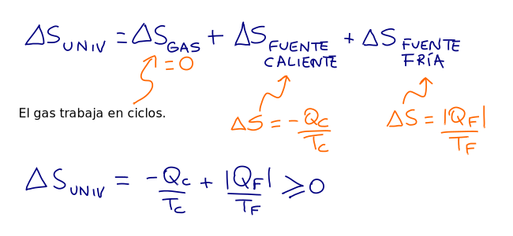
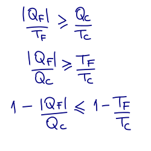

Segunda ley
aplicada a máquinas térmicas
El esquema muestra una máquina con las siguientes características:
El gas (la máquina) trabaja en ciclos.
Intercambia calor únicamente con dos reservorios (el entorno).
Las temperaturas de los reservorios permanecen constantes.
¿Cuál es la variación de entropía del Universo en cada ciclo de funcionamiento de la máquina?
Entonces, la variación de entopía del Universo de una máquina es mayor o igual a la variación de entopía del ciclo de Carnot con las mismas temperaturas.
Segunda ley:
$$e_\text{maquina} \leq e_\text{Carnot} $$
El rendimiento de una máquina real (irreversible) siempre es menor al rendimiento del ciclo de Carnot (\(e_\text{Carnot}=1-T_F/T_C\)) trabajando entre las mismas dos temperaturas.
La única máquina reversible que intercambia calor con solo dos reservorios es la que se corresponde con el ciclo de Carnot.